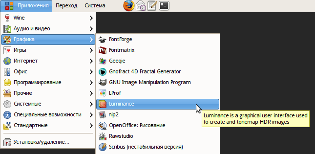

On Linux systems .desktop files are used to build system menus that list applications available to users. Here is what it looks like in GNOME desktop environment:

Luminance HDR ships with such a file as well. It is located in root directory with source code and gets installed to /usr/share/applications or /usr/local/share/applications, depending on your preferences.
To get a localized menu entry you need to do a very simple thing:
You should see something like this:

Send the updated file to us.
The very first thing you need to translate Luminance HDR into your native language is to get source code from the current development branch. To do this, you need a Subversion client (svn being the regular command line client). Then type
svn co https://qtpfsgui.svn.sourceforge.net/svnroot/qtpfsgui/trunk/qtpfsgui qtpfsgui
somewhere in your home directory to fetch source code, so that you always have access to it.
Then you will need to install Qt development package that contains Linguist — the application to assist you with translating. On Linux start your package manager and look for a package named something like qt4-dev, install it.
The next steps are as follows:
Here are some tips to help you make translation better.
Translating Luminance HDR takes a while, so it's best to translate those parts of user interface that you use most of the time. This will give you a false, but useful feeling of accomplishment and motivation to finish the whole work.
Test your translation as frequently as possible. This is especially important for dialogs that you rarely use.
Make sure you find a good balance between short and easy to understand phrases and words. English language is known to have relatively shorter words, so in most cases your translation will make user interface a bit larger. But if you start using abbreviations or shorter synonyms that don't quite fit the context, users won't appreciate that either.
Some translatable messages use variables like %1. Those are substituted by some values. For example, in "Using %1 thread(s)" (Batch Tonemapping dialog) this variable is substituted with amount of threads used to process HDR images into LDR images. When you type these variables manually, you can make a mistake and the trick with a variable won't work. So it's better to paste original text to translation entry field by pressing Ctrl+B in Linguist and then replace this original text with translation, leaving all present variables intact.
The documentation is inside help directory and consists of menu.xml file that defines table of contents, HTML files with text and illustrations in PNG or JPEG files.
Every translation is kept in its own directory named with two-letter language code like ru for Russian or es for Spanish. So download source code, unpack it and create a copy of help/en directory in help directory.
Start translating. It's best to translate table of contents first and proceed with actual content later. To translate table of contents open menu.xml file in your editor of choice and translate values of every text attribute. E.g. for <area text="Setting up Luminance HDR" file="prefs.html"> translatable text will be "Setting up Luminance HDR".
To test your translation open a terminal window, go to the top level directory with source code, and run sudo make install to reinstall Luminance HDR. All available translations will be automaticaly copied to the right place, and you will have to restart Luminance HDR to let it pick the added translation. However, as you progress with your translation, you only need to restart help browser to see changes in table of contents and you don't even need to restart the help browser to see changes in separate chapters — just click on some other chapter and go back again.
If user interface is not localized, you might want to do it before translating docs. Some users might complain and tell you that user interface in English is a de-facto standard and thus localized documentation should refer only to English UI. But this is just because they have grown up to use unlocalized software, so don't you worry.
The English (and Russian) translations have screenshots with Dust theme for both GTK+ and Metacity (and GTK+ engine for Qt), and Droid Sans 9pt font. You don't have to try to reproduce that, but please be visually consistent across your translation.
Please keep all of your illustrations below 800 pixels on the longer side. The reason is: when an image doesn't fit help browser's window, a nasty horizontal scrollbar appears. To get rid of it you need to grow width of the window, and that means that text will reflow and there will be too long barely readable lines of text.
When you are done, archive help/LANGUAGE directory with your translation and send it to us.